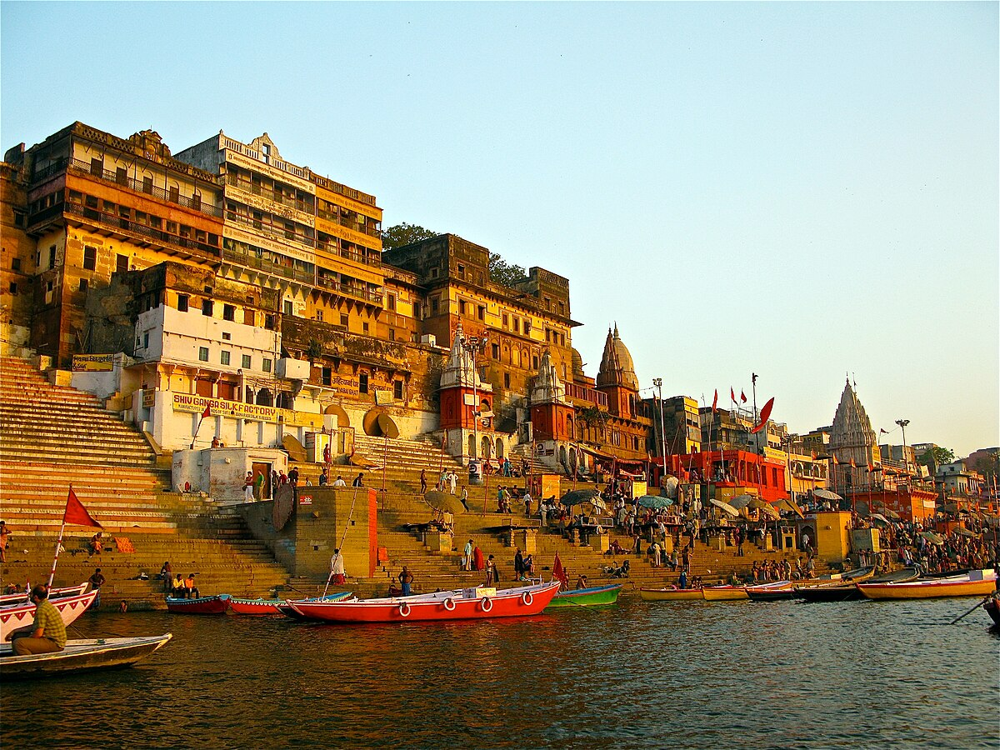

The Taj Mahal, located in Agra, is one of the Seven Wonders of the World. It is a magnificent marble mausoleum built by Emperor Shah Jahan in memory of his wife Mumtaz Mahal. The stunning architecture and intricate details of the Taj Mahal make it a must-visit destination.

Jaipur, also known as the Pink City, is the capital of Rajasthan. It is famous for its vibrant culture, majestic forts, and palaces. The City Palace, Hawa Mahal, and Amer Fort are among the top attractions in Jaipur.

The Kerala Backwaters are a network of interconnected canals, rivers, and lakes located in the southern state of Kerala. It offers breathtaking views of lush green landscapes, traditional houseboat rides, and a glimpse into the local village life.

Goa is a coastal paradise known for its beautiful beaches, vibrant nightlife, and Portuguese-influenced architecture. Visitors can enjoy water sports, explore historic churches, and savor delicious seafood.
Varanasi, also known as Benares, is one of the oldest inhabited cities in the world. It is a significant spiritual and cultural center in India. The ghats along the sacred River Ganges, the evening Aarti ceremony, and the ancient temples are some of the highlights of Varanasi.
The Golden Temple, located in Amritsar, is the holiest shrine of Sikhism. Its stunning golden architecture and serene atmosphere attract millions of visitors every year. The Langar, a community kitchen serving free meals to all visitors, is a unique experience.

Charminar, historic monument located at the heart of Hyderabad, west-central Telangana state, south-central India. The city, which is the capital of Telangana state, was also the capital of the historic princely state of Hyderabad. The monument was built in 1591 by Muḥammad Qulī Quṭb Shah, the fifth king of the Quṭb Shāhī dynasty.
East and west Godavari districts in Andhra Pradesh boasts a variety of tourist attractions, including natural wonders like Coringa Wildlife Sanctuary and Papi Hills, historical sites like Draksharama and Pattiseema, and cultural destinations like Konaseema.
the diverse and enchanting tourist attractions in India and embark on a memorable journey filled with rich history, culture, and natural beauty.